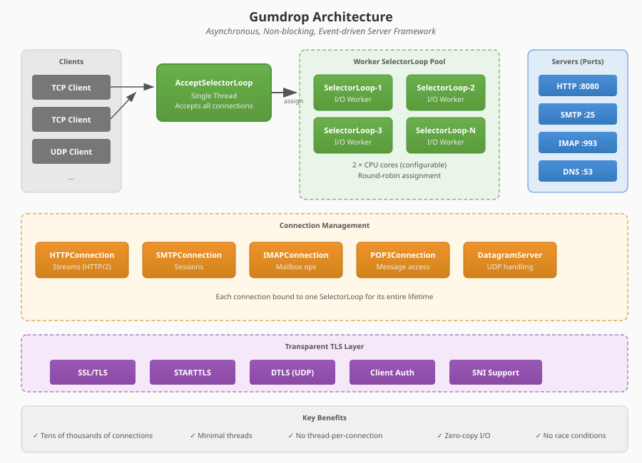
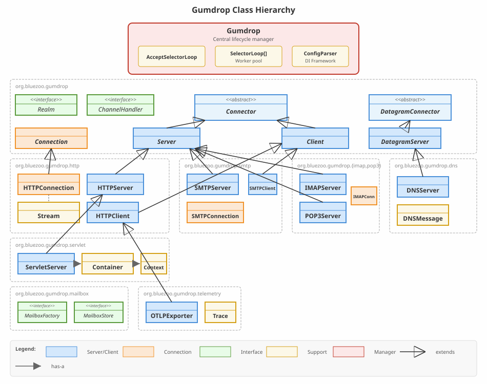

Gumdrop is a multipurpose Java networking framework built on a
reactor model: a small pool of SelectorLoop
threads multiplex many connections with nginx-like, callback-driven handlers
rather than thread-per-connection blocking I/O or future pipelines. Whether you
are building a server, an outbound client, or a
peer that listens and dials on the same
Runtime, you use the same endpoints, handlers, TLS stack, and
parsing style so each role is equally natural to develop. Transparent TLS is
built in, with implementations for HTTP, SMTP, IMAP, POP3, FTP, DNS, MQTT,
SOCKS, and more. Gumdrop 3 requires Java 25 (LTS) or newer so
its in-tree TLS can rely on the JDK's post-quantum cryptography: hybrid ML-KEM
key exchange and ML-DSA certificate validation are supported throughout (see
design and TLS & DTLS).
If you know Netty, Gumdrop solves a similar problem (extensible networking for
custom protocols) with a different programming model:
ProtocolHandler and protocol-specific staged handlers run as
synchronous callbacks on selector threads, familiar to nginx or C event-loop
programmers, rather than channel pipelines and Future completion.
It uses standard ByteBuffer throughout, pure Java in-tree TLS and
QUIC with secure defaults, push parsers and streaming codecs for constant
memory, many wire protocols plus OpenTelemetry on one stack, and a scalable
servlet container when you need it. Throughput is comparable to Netty's; see
benchmarks and design rationale.
This page is the Gumdrop documentation home. The sections below explain the reactor architecture in depth and link to detailed guides for every major feature.
Runtime, listeners, and handlers (canonical Gumdrop 3 setup;
no XML gumdroprc)
Gumdrop uses a reactor architecture first developed in 2005 around the then-new
Java NIO Selector API. A fixed set of loops runs the hot path:
accept, read, write, and handler callbacks without blocking. That design was the
original motivator for the project at a time when mainstream servlet containers
still tied every connection to a blocking java.net.Socket thread,
which capped scalability long before application logic became the bottleneck.

Traditional synchronous servers allocate one thread per connection. A thread blocks on socket read, processes the request, blocks on socket write, and repeats. This model is simple but has fundamental scalability limitations:
Gumdrop's reactor inverts this model. A small, fixed pool of worker threads (default: 2× CPU cores) runs the event loop for every connection, inbound or outbound:
Selector notifies
workers when connections are readyThe reactor pattern fits any network role. Servers accept many idle connections; clients and relays wait on upstream responses; peer nodes do both at once. In each case the worker thread never blocks on the socket: when one endpoint has no data, the loop services the next ready connection or datagram. That is why Gumdrop uses one architectural style for SMTP relays, HTTP microservices, MQTT brokers, and mesh peers instead of one stack for servers and another for clients.
A single AcceptSelectorLoop thread handles accepting new
connections on all server ports. When a connection is accepted, the resulting
endpoint is assigned to one of a pool of worker SelectorLoop
threads using round-robin distribution. Each endpoint is bound to a single
worker for its entire lifetime, eliminating race conditions and simplifying
state management.

Gumdrop separates what a protocol server does from where it
listens. A Server (such as HttpServer,
SmtpServer, or FtpServer) owns application wiring:
request or stream handlers, session providers, authentication, and lifecycle.
Each server holds one or more Listeners that bind to ports, UNIX
sockets, or UDP/QUIC endpoints and accept or receive traffic.
Listeners carry transport configuration: address, TLS or DTLS, ALPN, CIDR
filtering, rate limits, and timeouts. Subclasses choose TCP, UDP, or QUIC via
createTransportFactory(). One server often has several listeners
(for example SMTP on port 25 and 465, or HTTP on TCP and a UNIX socket).
Listeners can be static (declared when you compose the server) or
dynamic (created at runtime). FTP data channels are the classic
example: PASV/EPSV opens a short-lived listener registered on the
FtpServer via addDynamicListener() and removed when
the transfer ends. Server lifecycle stops static and dynamic
listeners together on shutdown.
When AcceptSelectorLoop accepts a connection, the listener's
createHandler() builds a ProtocolHandler (or a
protocol-specific staged handler). Composition APIs attach session providers or
handlers per listener so submission and relay ports can differ without
duplicate server instances. See
Application composition.
Outbound work uses the same reactor as inbound work. ClientEndpoint
dials peers; ClientHandler receives the same style of lifecycle
callbacks as server-side handlers (connected, data, security established,
disconnected). ClientEndpointPool reuses connections with
SelectorLoop affinity. Nothing about the API treats clients as a
secondary concern: protocol client libraries (HTTP, SMTP, DNS, MQTT, and others)
are built on these primitives alongside the server implementations.
Peer-to-peer nodes register listeners and create client
endpoints on one Runtime, which is the intended way to build mesh
or symmetric protocols. When a client is opened from an existing server
connection (for example an SMTP relay), it can share the server's
SelectorLoop. That SelectorLoop affinity provides:
Performing hot-path work on the selector thread is efficient but requires non-blocking code. Gumdrop supplies reactor-safe clients and push parsers for DNS, databases, message buses, and bodies of arbitrary size so server, client, and peer handlers can stay on the loop without ad hoc thread pools.
The architecture decouples transport I/O from protocol logic.
Endpoint is the transport-agnostic I/O interface, providing:
send(ByteBuffer) - queues data for transmissionstartTLS() - initiates STARTTLS upgradeclose() - closes the endpointisOpen() - tests whether the endpoint is activegetRemoteAddress(), getLocalAddress() - peer
addressespauseRead(), resumeRead() - flow control for
incoming dataonWriteReady(Runnable) - callback when the write buffer has
drained
ProtocolHandler is the callback interface for protocol logic:
connected(Endpoint) - called when the endpoint is readyreceive(ByteBuffer) - called when data arrivessecurityEstablished(SecurityInfo) - called after TLS
handshakedisconnected() - called when the connection or stream is closederror(Exception) - called on unrecoverable I/O or TLS failures
Protocol implementations (HTTP, SMTP, IMAP, etc.) implement
ProtocolHandler rather than extending a base class.
LineParser replaces the former LineBasedConnection
for line-oriented protocols, using composition instead of inheritance. The
framework handles read/write buffering, TLS encryption/decryption, and
endpoint lifecycle.
The Endpoint interface provides transport-level flow control that
gives protocol handlers explicit control over the rate of data transfer. This
is a simpler, more efficient alternative to the Reactive Streams specification:
instead of introducing Publisher/Subscriber
abstractions and demand-based signalling, Gumdrop exposes three primitives
directly on the transport — pauseRead(),
resumeRead(), and onWriteReady(Runnable) — that
manipulate the underlying I/O interest set. This provides complete
backpressure with zero object allocation overhead and no additional threading.
On TCP endpoints, pauseRead() clears the OP_READ
interest on the SelectionKey, causing the selector to stop
delivering data from that connection. The kernel TCP receive buffer fills,
the TCP window shrinks, and the remote peer naturally slows down. Calling
resumeRead() reverses this. For writes,
onWriteReady(Runnable) registers a one-shot callback that fires
when the transport has drained its write buffer, allowing protocol handlers
to feed data in chunks without unbounded memory growth. All TCP-based protocols
(SMTP, IMAP, POP3, FTP) and their client counterparts use these primitives for
large transfers such as message retrieval, uploads, and file downloads.
Stateful protocols such as SMTP, IMAP, and POP3 present a particular challenge: tracking the current protocol state and understanding what operations are valid at any given moment. This difficulty is compounded by event-driven architectures like Gumdrop, where the complexity of asynchronous callbacks can be bewildering.
Gumdrop addresses this with a staged handler pattern that compartmentalises protocol processing into discrete stages, each with clear goals and decisions:
For example, an SMTP handler progresses through well-defined stages:
ClientConnected → HelloHandler → MailFromHandler → RecipientHandler → MessageDataHandler
At each stage, the handler receives protocol events (EHLO, MAIL FROM, RCPT TO) and uses the provided state interface to accept, reject, or make policy decisions. The protocol handler manages all protocol mechanics — SASL authentication challenges, TLS negotiation, command parsing — leaving your session provider or handler to focus on business logic without managing sockets or framing.
The same staged pattern applies on the client side. An SMTP client handler receives events from the remote server (greeting, EHLO response, authentication challenges) and uses state interfaces to drive the conversation forward. That symmetry is deliberate: relays, gateways, and P2P nodes pair an inbound staged handler with an outbound one on the same reactor thread.
Gumdrop ships ready-to-use Server compositions as
embeddable, plug-in services from the start: register them on the
same Runtime as your own handlers to stand up real protocol
behaviour in integration tests, local development, or production (for example a
DNS forwarder, MQTT broker, or mail sink beside your application). They are not
separate products to install; they are part of the framework you already depend
on.
The built-in options for common deployments include:
WebDAVRequestHandler serves static files over HTTP
from a filesystem root with optional WebDAV (RFC 4918) distributed authoring support
(PROPFIND, PROPPATCH, MKCOL, COPY, MOVE, LOCK, UNLOCK)ServletRequestHandler hosts JSP and
servlet applications with full Servlet API support, clustering, and deploymentFtpServer.compose() with
FileSystemFtpSessionProvider (filesystem root with read-only
option), RoleBasedFtpSessionProvider (role-based access control
with quota management), or AnonymousFtpSessionProvider (anonymous
read-only public distribution)SmtpServer.compose() with
LocalDeliverySessionProvider for mailbox delivery,
SimpleRelaySessionProvider for MX forwardingImapServer with mailbox session provider
accepts all operations using the configured Realm and MailboxFactoryPop3Server with mailbox session provider
accepts all operations using the configured Realm and MailboxFactoryDnsServer with composed handlers: caching
forwarder (UpstreamRelayHandler), authoritative zones
(AuthoritativeZoneHandler); see examples/dns-authoritative/MqttServer.compose() with no session
provider is a complete MQTT 3.1.1/5.0 message broker; accepts all connections,
publishes, and subscriptions using the configured RealmSocksServer.compose() with no session
provider is a SOCKS4/4a/5 proxy with destination filtering and relay limits;
optional Realm for SOCKS5 authenticationEach implementation doubles as a reference for custom handlers. When you build your own HTTP microservices, outbound calls to other Gumdrop clients (or third-party services via Gumdrop protocol clients) can use SelectorLoop affinity so the forward request runs on the same worker thread as the inbound request. That keeps gateway and BFF-style chains on the reactor without thread handoffs or extra buffering. In many deployments, composing a built-in server with the right session provider or request handler is enough without writing low-level protocol code.
For UDP-based protocols, UdpEndpoint (via
UdpTransportFactory) provides the same event-driven model. The
ProtocolHandler interface is reused: receive()
delivers individual datagrams and sendTo() addresses responses to
the source.
The DNS server demonstrates this abstraction, providing a complete DNS proxy that can be subclassed for custom name resolution. DTLS (TLS for UDP) is supported transparently, with per-remote-address session management handled automatically.
All endpoints support transparent TLS encryption. The framework handles:
Supported protocol versions, deliberate TLS 1.2 limits, cipher suite lists, and listener configuration properties are documented on the TLS & DTLS page. Summary:
To enable TLS, configure the keystore on any listener:
TlsConfig tls = TlsConfig.keystore(Path.of("keystore.p12"), "secret");
SmtpServer smtps = SmtpServer.compose()
.listener(new SmtpListener().port(465).secure(true).tls(tls))
.sessionProvider(SmtpServerSessionProviders.relay()
.hostname("relay.example.com"))
.server();
Any TCP-based listener can also bind to a UNIX domain socket by specifying a
path instead of a port. This uses the standard NIO
UNIX domain socket support (JEP 380, available on Java 25+). Once accepted,
UNIX domain socket connections behave identically to TCP connections — the
same SocketChannel, TcpEndpoint, and
ProtocolHandler infrastructure is used unchanged.
UNIX domain sockets are useful for local inter-process communication where network overhead is unnecessary and filesystem permissions provide the security boundary. A common pattern is to expose a service on both TCP (for remote clients) and a UNIX socket (for local tools or reverse proxies):
// TCP listener for remote clients
SmtpListener tcpListener = new SmtpListener().port(25);
// UNIX domain socket for local delivery
SmtpListener unixListener = new SmtpListener();
unixListener.setPath("/var/run/smtp.sock");
SmtpServer smtp = SmtpServer.compose()
.listener(tcpListener)
.listener(unixListener)
.mailboxFactory(mbox)
.sessionProvider(SmtpServerSessionProviders.localDelivery()
.localDomain("example.com"))
.server();
Calling both setPath and port(...) on the same
listener is a configuration error — they're mutually exclusive. Stale
socket files from previous runs are automatically removed on bind, and the
socket file is deleted on shutdown.
Servers provide configurable endpoint lifecycle management:
Timeouts can be configured with time unit suffixes (ms, s,
m, h):
ImapListener listener = new ImapListener();
listener.setIdleTimeoutMs(30 * 60 * 1000L);
listener.setReadTimeout("60s");
listener.setConnectionTimeout("2m");
ImapServer imap = ImapServer.compose()
.listener(listener)
.realm(realm)
.sessionProvider(ImapServerSessionProviders.mailbox(maildirFactory))
.server();
Endpoints track timestamps for creation, last activity, and connection establishment
(after TLS handshake for secure endpoints). These are accessible via
getTimestampCreated(), getTimestampLastActivity(), and
getTimestampConnected().
Gumdrop 3 wires applications in Java — see
Application composition for servers,
listeners, and handlers. Legacy gumdroprc XML and its
reflective dependency-injection container have been removed entirely.
The Gumdrop logo is a gumdrop torus, generated using POV-Ray. A gumdrop torus is a mathematical construct—the logo is such a torus viewed from an angle that makes it resemble the letter G. Images were created using POV-Ray and/or GIMP and are copyright 2005 Chris Burdess.
Pick a protocol or topic from the list above, or browse the example applications and tests in the source tree. Contributions and new features are welcome.
Questions about Gumdrop can be sent to Chris Burdess.
Gumdrop